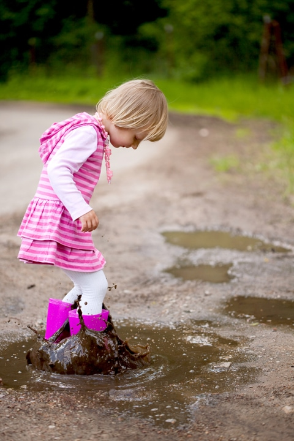
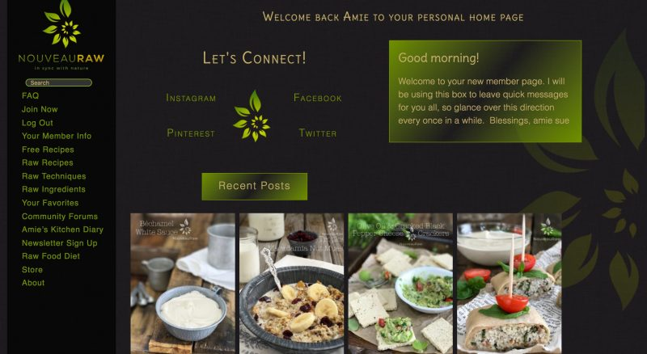
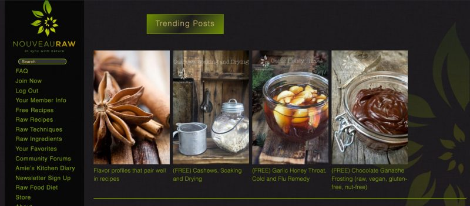

A New Members Home Page

Last week I shared a blog post with you that explained all the neat NouveauRaw features and upgrades that we have been and are currently working on. Today, we were able to check another one off our list…
A Personalized Members Home Page!
We realized after a while that it was confusing to know if you were logged in or not. Now, every time you log in, you will land on YOUR personalized member page. Below, I shared some screenshot pictures to show you what you can expect. I had to break it into three photos because you have to scroll down the member page to see it all.
Ooooooh, I am so excited. I feel like a little girl who just spied her dream muddle puddle!
Ok, first things first. The left menu bar is the same and will remain there at all times. If you are deep into the recipe categories and want to return back to your personal home page, just click on the top, left-hand NouveauRaw logo, or the “home” word in the “breadcrumbs” list that is at the top of the current page. So now, let’s chat about what is on the members’ page.
Let’s Connect: I would love to stay in contact with you inside or outside of the NouveauRaw site. If you wish too, you can follow me and I can follow you on Instagram, Facebook, Pinterest, and Twitter. Just click on any of the social media names on your members’ page and it will take you to my accounts.
The big green box to the right… this is where I can leave messages to all my members without having to send out an email or posting. So please take a peek at it when you log in to see if I have any news to share with you.
Recent Posts: Continuing down the page, you will see the “Recent Posts” Here you will find the last four posts that I have published.

Trending Posts: Further down the member’s page, you find the “Trending Posts.” These are the four most popular posts for the current week. I thought you might like to see what your fellow members are interested in.

Keep scrolling down your members’ page and you will see… “My Account Info” There are six different links that you can click on. Let me quickly go over them.
All Membership Info: Pretty self-explanatory but this is where you can view your billing, what email you signed up under, and so forth.
View My Membership Option: This link will take you to another page should you want to change your membership from a monthly membership to an annual membership. Or vice versa.
Edit My Profile: On this page, you can add a profile picture (which I highly encourage), change your password, or add biographical info about yourself. If you make any changes be sure to scroll to the bottom of that page and hit the button that reads, “Update Profile.”
Change My Password: This takes you to the same page as the “edit my profile” link, but we thought it would be clearer to have it be a separate link.
Cancel Membership: If you wish to discontinue your membership, click on this button and follow the simple prompts. There will be a place for you to leave a quick message as to why you are canceling your account. Please take the extra 30 seconds to do so, we want to know.
Cancel Newsletter: As a member, you can opt-out of receiving emails from me… why is beyond my understanding.. but hey! hehe So if you wish to slim down your inbox, just click that button and follow the prompts to stop emails.
For now… that is it. Simple and straight forward but it’s your own cozy space. I hope you enjoy the new member’s page. We spent countless hours designing and getting it to work. :) Now on to our next project…
Blessings and joy, amie sue
© AmieSue.com